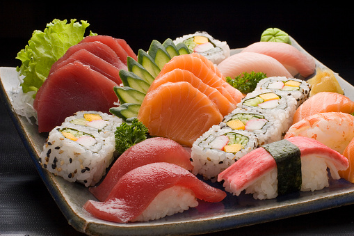

JAPANESE CUISINE

Description
Ingredients
- Tuna Fish
- Rice
- Avocadoes
- Lettuce
- Water melon
- Broccoli
- Salt
- Cauliflower
- Milk
Steps
- Steam the cleaned fish
- Boil the rice
- Cut avocadoes and Lettuce into small pieces
- Cut Broccoli and Melon into small pieces
- Add salt to the fish and add rice as well
- Add milk to the cauliflower
- Serve in one plate